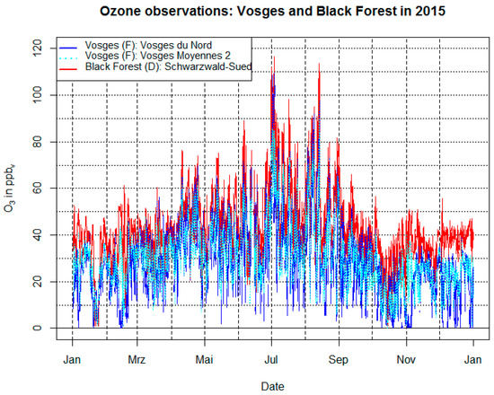
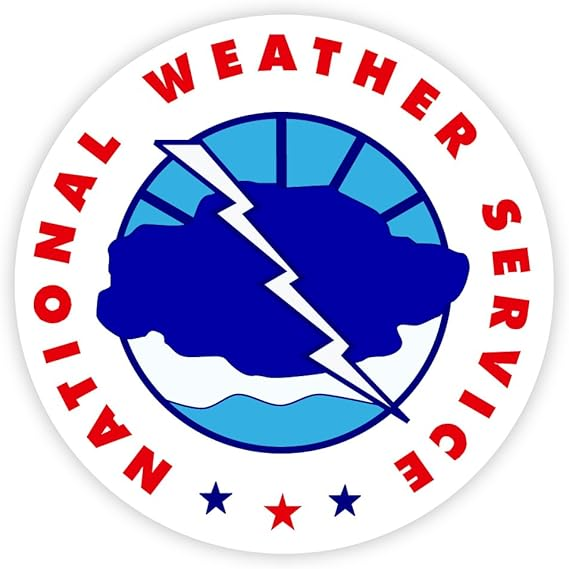

MESO Information
Home
Missions
Articles
Gallery
Members
Store
Sponsors
Site Map
Guestbook
Links
Weather Data, Plots, Analyses, Etc.

Interactive Weather Information Network --National Weather Service
Sat, Rad, Fcst
WeatherNet --U. of Michigan
Radar and Satellite
Assorted Weather Images --Intellicast
Southern Plains Radar Composite
Central Plains Radar Composite
US Radar Summary
EarthWatch Weather On Demand
Current Watches and Warnings
Severe Weather Data --Ohio State U.
Unisys Weather
Surface Analysis
500mb Analysis
200mb Analysis
WEATHER DATA--NSSL
Forecast Soundings --College of DuPage
Storm Prediction Center
Day 1,2,3 Convective Outlooks
Watches/Warnings
Hourly Mesoanalysis
Probabilistic Outlooks
Weather Extravaganza (WXEX)
APR Weather
Upper Air Stability Analyses Page --National Weather Service
WW2010 Sfc Products --U. of IL Urbana-Champaign
Mesoscale Model (MM5) Surface Maps --Penn State Univ. / NCAR
RAMSDIS Online --Colorado State Univ.
Global Geostationary Weather Satellite Image Viewer --NASA/MSFC
General Information and Safety

Tornado Project Online
Severe Weather!
Severe Thunderstorm Climatology
Climate Data Services
NOAA Weather Radio -- The voice of the NWS with over 650 stations nationwide
PageUpdate -- Official Wireless Severe Weather Provider for MESO
Freese Notis - InterRAD Software: Fastest, most comprehensive Internet radar service available.
SWIFTWX Software -- Track your position over any wx map & monitor severe wx in real-time.
National Severe Storms Laboratory
Tornado Info and Safety Tips
Storm Data Publications --NCDC
Radar Resources and Archives --NCDC
National Lightning Safety Institute
High Plains Climate Center Storm Chasing Resources
SKYWARN
MESO Media Coverage
Pittsburgh Post-Gazette; Pittsburgh, PA (6/14/98), (6/15/98)
Toledo Blade; Toledo, OH (6/28/98), (6/29/98)
Millbrook Round Table; Millbrook, NY (see "An American Odyssey")
Reading Eagle; Reading, PA (7/25/98)
Pittsburgh Post-Gazette; Pittsburgh, PA (8/26/98), (8/27/98), (8/28/98) - Hurricane Bonnie
auf einen Blick; Hamburg, Germany (3/25/99)
Sunday News; Lancaster, PA (5/23/99)
Sunday News; Lancaster, PA (6/13/99)
Discover Magazine Online "Pick of the Web"; (3/00)
Pittsburgh Post-Gazette Online; Pittsburgh, PA (5/12/00 - 5/19/00)
Bangor Daily News; Bangor, ME (7/24/00)
Handheld Magazine; (3/01)
The Metro Net; Toledo, OH (4/26/01)
USA Today; (6/19/01)
Froggy 99.9 FM; Fargo, ND (6/20/01)
MSN Online; (7/30/01)
Lake Region Times Newspaper; Madison Lake, MN (8/15/01)
The News Messenger; (11/15/02)
The Kentucky Post; Covington, KY (11/30/02)
Campbell County Recorder; Campbell Co., KY (3/13/03)
ABC WTVG Channel 13; Toledo, OH (5/7/03)
KFAB AM Superstation; Cedar Rapids, IA (5/8/03)
Team Member Webpages
Nancy Bose
John R. Griswold
David Hoadley
David Kauffman
Michael McGowan
Robert Miller
Mark Schaefer
Jim Steele
Other Chasers and Teams
Minnesota Storm Intercept Association
Nebraska Vortex Intercept Team
TESSA
Tornado Extreme Chase
Storm Track
Mid-Atlantic Weather Station
Storm Stalkers
Wild Weather
Helicity Productions
Silver Lining Tours